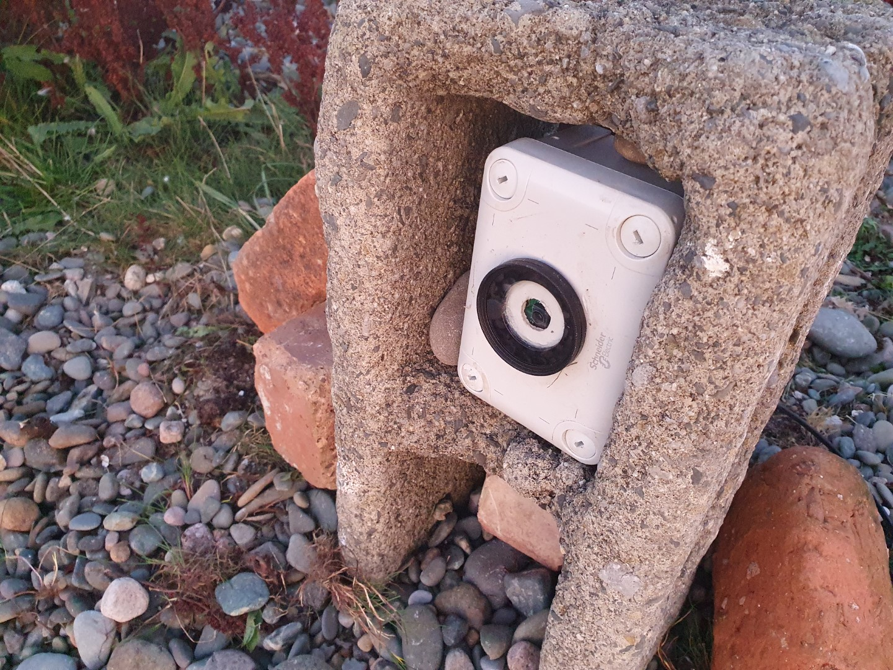

Livestreaming on a Pi Zero
Running a livestreaming nature camera on low power.
Project Details / Background
I was inspired to create a low power, low cost livestreaming nature camera that could be relatively easily deployed around the nature reserve.
Power Over Ethernet
If you have a power source and ethernet connection within 100m, the easiest is to use a Power-over-Ethernet (PoE) connection. Ethernet cable is a much lighter way to run power long distance rather than a mains cable of the same length.
Hardware:
- Huawei E3372 or similar 4g dongle
- 4G data sim
- Pi + pi camera
- PoE hat with fan
- Ethernet cable, max 100m
- 60W ethernet injector
- Watertight case (eg this electrical enclosure) and connector things
- Drill and bits, small clear plastic to cover the drilled hole for the camera, plus glue to glue the clear plastic tightly over this hole.
This camera uses Power over Ethernet so that you can have a very long power cable that doesn't weigh too much. You could of course use a mains cable, but with PoE you have the option of plugging it into a modem at the mains, or (as I did) use a mobile data dongle and only need a mains supply into the PoE.
The Pi needs a PoE Hat, get one with a fan. I used a larger enclosure than needed too, to try to help with cooling.
Drill a hole for the camera and one on the other side for the cable entry. Then cover this hole with plastic, strongly glued (I used epoxy resin), creating a window for the camera to look out of. The Ethernet Cable will fit through a cable gland size PG7 or M12.
Techincally a 30W PoE injector should work, but it didn't. 60W is fine, but you can't power the Pi and also a USB 4G wifi modem (such as Huawei E5330, which would have been perfect) from the pi as well, so I used a Huawei E3372 with an unlimited data SIM from Vodafone. This worked great, as we have good Vodafone 4G reception here. Your other option is to plug a 4G router with an ethernet port (such as TP-Link Archer modems) into the PoE injector at the mains.
With a USB modem, you won't be able to connect to the Pi over SSH or VNC on the same network from your computer or phone, which is really important to check for any problems and to safely shut down the Pi if you need to. So I set up to access the Pi over the internet.
Powering with Solar and a Battery
Hardware:
- 4g Wifi USB Modem, such as a Huawei E5330 or Vodafone R216-Z
- 4G data sim
- Pi + pi camera
- Witty pi power management hat
- 12V Lead Acid Battery, 72Ah
- 70W Solar Panel
- Solar charge controller with built-in USB socket
- 12V 2-core cable to connect the camera to the solar charge controller
- Large waterproof box to put the battery and electricals in, eg Form Skyda 49l
- Watertight case (eg this electrical enclosure) and connector things
- Drill and bits, small clear plastic to cover the drilled hole for the camera, plus glue to glue the clear plastic tightly over this hole.
This version runs on a solar and battery power. I am currently using a large 72Ah lead battery, which should keep the pi powered even through grey days in the middle of winter. Solar power isn't too complicated, but you might want to read around small off-grid solar systems for more detail, particularly about working out how long you can power things for, and how big a solar panel you need.
The solar panel, battery and the thing you are powering (the load) all plug into a solar charge controller, which monitors and controls the power going from the panel into the battery to prevent damage to the battery and to the thing you are powering.
The Witty Pi hat lets you safely turn the pi on and off without having to log in, as switching it off without shutting down first can corrupt the SD card. Not only is just presing an off button much easier when you're out in the field trying to set everythign up, the Witty Pi also lets you set a timer for automatically switching on and off every day, so you don't have to leave it running at night when it's too dark to see, saving battery.
Your USB wifi modem can be plugged straight into the charge controller's USB port, but these usb ports don't generally have enough amps to also power the pi. Witty Pi hat solves this problem nicely, as newer version of Witty Pi let you power the Pi directly from 12V. Solder a XH2.54 male connector to one end of your 12V cable to connect it to the Witty Pi, the other end is then put in the solar charge controller Check you have Witty pi 3 v2, else this won't work.(The 12V cable will fit through a cable gland size PG7 or M12.)
For my solar picam, I glued a camera UV filter over the driled hole for the camera to look out of. I fixed the PiCam to a small piece of plastic, and then used self-adhesive plastic stand-off to hold this. This required tiny bolts for the picam (2mm!), and slightly bigger holes for the stand-offs.
If you are near the pi, you can access the pi headerless over the same wifi network. But it's a lot easier to be able to access it from elsewhere, so I used remote.it to access over the internet.
I also used a smaller enclosure (Schneider 138x93x72mm) that the pi just fits into. I had to arrange it carefully because the off switch of the Witty Pi kept pressing against the wall. It looks great though!
The Streaming
For the streaming itself, you need Restreamer which runs in Docker. Nestbox Tech has a brilliant guide to setting up docker on the Pi and getting started with Restreamer - it's a lot easier than I thought it would be, and it's easy to find help on Restreamer's github page.
Youtube turned out to be a poor way to stream this. Every new stream on Youtube gets a different URL, so it's difficult to embed or point people at a live stream that regularly stops and starts. So instead, I used Twitch, this is a streaming service aimed at gamers, but is very easy to embed with a simple iFrame or just create a channel on Twitch itself.
You can then set up a Docker command that runs Restreamer and your stream, and add it to a Crontab job to run every day. To run automatically without having to start and stop the stream on Restreamer's web gui, use the environment variable RS_INPUTSTREAM and RS_OUTPUTSTREAM. For example, this is the line I use to start my stream each day:
docker run -d --restart always --name restreamer
-e "RS_USERNAME=user" -e "RS_PASSWORD=password"
-e "RS_MODE=RASPICAM" -e "RS_RASPICAM_BITRATE=6400000"
-e "RS_RASPICAM_VFLIP=true" -e "RS_RASPICAM_WIDTH=854" -e "RS_RASPICAM_HEIGHT=480"
-p 8080:8080 -e "RS_INPUTSTREAM=rtmp://127.0.0.1/live/raspicam.stream"
-e "RS_OUTPUTSTREAM=rtmp://lhr03.contribute.live-video.net/app/[streamkey]"
-v /opt/vc:/opt/vc --privileged datarhei/restreamer-armv7l:latest
Data and mobile signal - Start with a low bitrate and increase it until you have a good pay off between a smooth stream, and one where you can actually make out what the image is. In my example above, the RS_RASPICAM_BITRATE is 6400000, or 640 kbps. 640 kbps = 0.288 gb per hour, or 3.5gb for a 12 hour stream.
Image Gallery

Solar Cam in a breezeblock
The insides of the PoE-powered Camera
Inside the Solar Powered camera
The lovely Schneider Enclosure with a UV filter
Solar cam deployed on the beach. The large 12V battery is in a water tight plastic tub